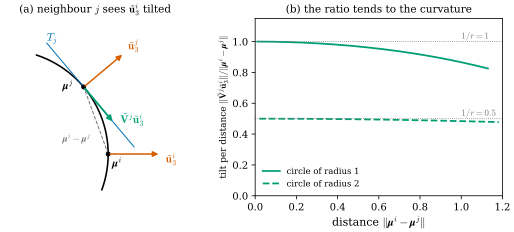
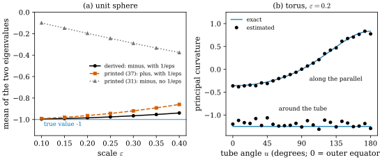

49.4 Estimating Normals and Curvature
Goals
- Theorem 3.2가 말하는 manifold 기반 estimator의 입력과 출력을 말하고, tangential kernel matrix와 shape operator matrix의 eigen decomposition에서 normal과 principal curvature·direction이 나오는 흐름을 설명할 수 있다.
- 부록 B의 Koszul formula를 metric compatibility와 torsion-free 조건에서 유도할 수 있다.
- varifold 기반 estimator, 곧 [BLM22]의 approximate weak second fundamental form을 \(2 \times 2\) matrix로 줄인 식 (12)를 쓰고, 그 matrix가 “이웃의 tangent plane에서 본 normal의 기울기를 거리로 나눈 것”임을 설명할 수 있다.
- 식 (12)와 부록 D에 있는 네 가지 문제(\(\tilde{\mathbf{V}}^j\)의 오식, 둘째 항의 부호, 빠진 \(1/\varepsilon\), 첨자 범위)를 짚고 수치로 확인할 수 있다.
Prerequisites
- Section 49.2(Gaussian마다 붙는 기하량)와 Section 49.3(그 기하량을 쓰는 곳).
- Levi-Civita connection과 Christoffel symbol(Chapter 22).
- tangent projection의 도함수와 generalized second fundamental form(Section 46.6), kernel로 부드럽게 한 first variation(Section 46.7).
Motivation
Section 49.3의 모든 식은 Gaussian마다 normal \(\tilde{\mathbf{u}}^i_3\)와 principal curvature·direction \((\tau^i_d, \tilde{\mathbf{w}}^i_d)\)를 요구했다. 논문은 이전 연구가 이 값을 local PCA처럼 잡음에 약한 방법으로 한 번만 구했다고 비판하고, 두 가지 estimator를 내놓는다 [GeoSplat25, §3.2]. 하나는 Gaussian 중심들이 smooth surface 위에 있다고 보고 Laplacian으로 계산하는 manifold 기반 estimator이고, 다른 하나는 중심들을 point cloud varifold로 보고 [BLM22]의 curvature 식을 쓰는 varifold 기반 estimator다.
이 절은 두 estimator의 결과(Theorem 3.2와 식 (12))를 읽고, 그 뒤의 부록 B(Koszul formula)와 부록 D(식 (12)의 유도)를 따라간다. manifold 기반 estimator의 증명 전체(부록 E)는 길어서 Section 49.5에서 따로 읽는다.
The Manifold-Based Estimator in One Theorem
manifold 기반 estimator는 모든 Gaussian이 local manifold 위에 있다고 가정한다(Definition 49.2.1). 그 핵심은 두 개의 작은 matrix다. 첫째는 \(3 \times 3\) tangential kernel matrix로, 성분은 coordinate function \(\varphi_d(\mathbf{x}) = [\mathbf{x}]_d\)와 Laplacian \(\Delta\)로 계산한다(논문 식 (42)–(43)).
여기서 \(\mathbf{v}^i_d\)는 \(d\)번째 좌표를 가장 빨리 늘리는 tangent vector이고, \(\operatorname{Lbnz}_\Delta[f, h] = \Delta(fh) - f\Delta h - h\Delta f\)는 Laplacian이 곱의 미분 규칙(Leibniz rule)을 어기는 양이다. 둘째는 \(2 \times 2\) shape operator matrix다(논문 식 (51)).
\(s^i(\mathbf{n}, \cdot, \cdot)\)는 normal \(\mathbf{n}\)에 대한 shape operator, 곧 이 study set의 \(\inner{W\cdot}{\cdot}\)이다(Table 49.1.1). 논문 본문은 결과를 다음과 같이 요약한다.
Theorem 49.4.1 (manifold-based estimation, simplified) [GeoSplat25, Thm. 3.2]. embedded local manifold \(\mathcal{M} \hookrightarrow \mathcal{E}\)의 점 \(\mathbf{q} = \boldsymbol{\mu}^i\)에 있는 Gaussian \(\mathcal{G}^i\)에 대해, tangential kernel matrix \(\mathcal{K}^i\)((49.4.1))의 eigenvector 가운데 \(0\)이 아닌 eigenvalue에 대응하는 것들은 \(T_{\mathbf{q}}\mathcal{M}\)의 orthonormal basis \(\{\mathbf{u}^i_d\}_{1 \le d \le D_{\mathcal{M}}}\)를 이룬다. 또 shape operator matrix \(\mathcal{S}^i\)((49.4.2))는 eigenvalue와 “다시 정렬한(realigned)” eigenvector의 쌍으로 분해되고, 그 쌍이 principal curvature와 principal direction \(\{(\tau^i_d, \tilde{\mathbf{w}}^i_d)\}_{1 \le d \le D_{\mathcal{M}}}\)이다.
Proof sketch. 논문은 이 정리를 Proposition E.2와 Theorem E.7을 줄인 것이라 하고, 증명은 부록 E에 있다. 요점은 두 가지다. (a) \(\mathbf{v}^i_d\)는 좌표축 \(e_d\)를 tangent plane에 project한 것이고, 그래서 \(\mathcal{K}^i\)는 tangent projection \(\mathbf{I} - \mathbf{n}\mathbf{n}^{\mathsf T}\)과 같다. eigenvalue는 \(1, 1, 0\)이고, \(1\)의 eigenvector가 tangent basis, \(0\)의 eigenvector가 normal이다. (b) \(\mathcal{S}^i\)는 tangent basis \(\mathcal{U}^i = [\mathbf{u}^i_1, \mathbf{u}^i_2]\)에 대한 shape operator의 matrix이므로 그 eigenvalue가 principal curvature이고, \(2 \times 2\) eigenvector \(\mathbf{w}^i_d\)를 \(\R^3\)으로 되돌린 \(\tilde{\mathbf{w}}^i_d = \mathcal{U}^i\mathbf{w}^i_d\)가 principal direction이다. 이것이 “realigned”의 뜻이다. 자세한 것은 Section 49.5에서 본다.
normal은 두 tangent vector의 cross product \(\mathbf{u}^i_{d_1} \times \mathbf{u}^i_{d_2}\)(\(d_1 \ne d_2\))로 쉽게 얻는다고 논문은 쓴다(“unnormalized version”). \(\mathbf{u}^i_1, \mathbf{u}^i_2\)가 orthonormal이면 cross product는 이미 unit vector이고, \(\mathcal{K}^i\)의 \(0\) eigenvalue의 eigenvector와 부호까지 빼면 같다. 수치 계산에서는 \(\mathcal{K}^i\)의 eigenvalue가 정확히 \(0, 1\)이 아니므로 “가장 작은 eigenvalue의 eigenvector”를 normal로 쓰는 것과 같다.
Example 49.4.2 (the manifold estimator on the unit sphere). unit sphere에서 고르게 뽑은 점 \(50{,}000\)개를 Gaussian 중심으로 두고, Laplacian을 kernel 폭 \(t = 0.01\)의 random-walk generator로 근사해(Section 49.5) 점 \(12\)개에서 Theorem 49.4.1의 계산을 했다. \(\mathcal{K}^i\)의 eigenvalue의 평균은 \((0.010, 0.960, 1.017)\)로 \((0, 1, 1)\)에 가깝고, 가장 작은 eigenvalue의 eigenvector와 참 normal의 각은 모두 \(0.6^\circ\) 아래다. 바깥 normal로 맞춘 principal curvature의 평균은 \((-1.01, -0.92)\)이다(참값 \(-1, -1\)). 방향은 잘 맞지만 curvature에는 \(10\%\) 가까운 편향이 남는다.
Verification: verify/v-49-4-estimating-normals-curvature.py
Appendix B: The Koszul Formula
부록 E의 shape operator 계산은 Hessian을 connection으로 쓰고, 그 connection을 metric만으로 표현한다. 그 다리가 Koszul formula이고, 부록 B가 유도를 적는다 [GeoSplat25, App. B]. metric과 compatible하고 torsion-free인 affine connection은 하나뿐이다(Levi-Civita connection, Chapter 22). 그 connection을 metric으로 적는 공식이 다음이다.
Proposition 49.4.3 (Koszul formula) [GeoSplat25, eq. (23)], [Lee-IRM, Ch. 5]. Riemannian manifold \((\mathcal{M}, g)\)의 Levi-Civita connection \(\nabla\)과 smooth vector field \(U_1, U_2, U_3\)(논문의 \(\mathbf{U}_1, \mathbf{U}_2, \mathbf{U}_3\))에 대해
이다. 여기서 \(\partial_Uf\)는 \(f\)의 \(U\) 방향 도함수, \([\cdot, \cdot]\)은 Lie bracket이다.
Proof. 부록 B의 순서를 따른다(논문은 \(\mathcal{M}\)을 위첨자로 붙이지만 여기서는 생략하고, 폭을 줄이려고 vector field를 \(U_i\)로 쓴다). metric compatibility를 세 번 순환해 쓰면(식 (19))
이다. 처음 두 식을 더하고 셋째 식을 빼면(식 (20))
이다. torsion-free 조건(식 (21))
로 \(\nabla_{U_2}U_1 = \nabla_{U_1}U_2 + [U_2, U_1]\)이고 나머지 두 차도 bracket이 되므로, 오른쪽은(식 (22))
이다. \([U_2, U_1] = -[U_1, U_2]\)를 쓰고 \(g(\nabla_{U_1}U_2, U_3)\)에 대해 풀면 (49.4.3)이다.
부록 B의 최종 식 (23)은 표준적인 Koszul formula와 부호까지 같다. 좌표 vector field \(U_i = \partial_i\)에서는 bracket이 모두 \(0\)이므로 (49.4.3)은 Christoffel symbol의 식 \(g(\nabla_{\partial_i}\partial_j, \partial_k) = \tfrac12(\partial_ig_{jk} + \partial_jg_{ki} - \partial_kg_{ij})\)이 된다(Exercise 49.4.2). GeoSplat은 이 공식을 부록 E.8에서 Hessian의 식
\[ \operatorname{Hess}\eta(\operatorname{grad}\varphi_{d_1}, \operatorname{grad}\varphi_{d_2}) = g(\nabla_{\operatorname{grad}\varphi_{d_1}}\operatorname{grad}\eta, \operatorname{grad}\varphi_{d_2}) \]
에 써서, 모든 항을 “metric의 방향 도함수”로 바꾼다(Section 49.5).
The Varifold-Based Estimator
두 번째 estimator는 manifold를 가정하지 않는다. [BLM22]은 point cloud varifold에 대해 approximate weak second fundamental form(WSFF)을 정의하고, 그 matrix의 eigen decomposition이 curvature 정보 전체를 준다는 것을 보였다. GeoSplat의 부록 D는 그 식을 Gaussian에 맞게 \(2 \times 2\) matrix로 줄인다 [GeoSplat25, §3.2, App. D]. WSFF의 정의와 수렴 이론은 [BLM22]을 읽는 Chapter 48의 몫이다 [확인 필요: Chapter 48 미작성 — 참조 번호 확정 필요]. 여기서는 부록 D가 요약한 식만 Chapter 46의 말로 읽는다.
What GeoSplat recalls from [BLM22]
\(G = G_{D_{\mathcal{M}}, D_{\mathcal{E}}}\)로 줄여 쓰자. Grassmannian의 원소 \(\mathsf{T}\)를 orthogonal projection matrix \((\mathsf{T}_{jk})\)와 같이 보고, \(\nabla^{\mathsf T}\)를 \(\mathsf{T}\)에 대한 tangential gradient, \(e_i\)를 \(i\)번째 표준 basis vector라 하자. varifold \(\mathcal{W}\)의 G-linear variation은 \(C^1_c(\Omega)\) 함수 \(\varphi\)에
로 작용한다(식 (29)). 모든 G-linear variation이 Radon measure이면 \(\mathcal{W}\)가 locally bounded variation을 가진다고 하고, 그때(식 (30))
로 나뉜다. \(b_{i,j,k} \in L^1(\norm{\mathcal{W}})\)이고 \(\delta^S_{i,j,k}\mathcal{W}\)는 \(\norm{\mathcal{W}}\)에 대해 singular다. (49.2.10)의 first variation을 성분 \((j, k)\)로 쪼갠 것이다. smooth closed surface이면 (46.6.5)에서 \(b_{i,j,k} = A_{ijk} + P_{jk}\vec H_i\)이고, \(A_{ijk} = \inner{\nabla^MP_{jk}}{e_i}\)는 tangent projection의 도함수다((46.6.2)).
point cloud varifold, 곧 원자 \((\mathbf{q}_l, \mathsf{T}_l, m_l)\)의 합에서는 [BLM22]이 approximate WSFF를 다음과 같이 정의한다(식 (31)). 점 \(\mathbf{q}_{l_1}\)을 고정하고 이웃 \(l_2\)마다 \(\boldsymbol{\delta}_{l_2} = \mathbf{q}_{l_1} - \mathbf{q}_{l_2}\), \(r_{l_2} = \norm{\boldsymbol{\delta}_{l_2}}\), 분모를 \(Z = \sum_{l_2}m_{l_2}\chi(r_{l_2}/\varepsilon)\)로 줄여 쓰면
이다. \(\Upsilon, \chi\)는 적당한 kernel이고 \(\varepsilon \gt 0\)은 scale이다. \(\mathbf{t}\)의 첨자 모양 \((jk, i) + (ik, j) - (ij, k)\)는 (46.6.4)의 \(B^k_{ij} = \tfrac12(A_{ijk} + A_{jik} - A_{kij})\)와 같다. tangent projection의 차 \(\mathsf{T}_{l_2} - \mathsf{T}_{l_1}\)이 그 도함수 \(A\)의 역할을 하고, 그 조합에서 second fundamental form을 꺼내는 것이다. curvature는 다음 matrix의 eigen decomposition으로 얻는다(식 (32)).
\(i, j, :\)는 마지막 첨자의 성분을 vector로 모은다는 뜻이고, \(\bar{\mathsf{T}}_{l_1}\)은 tangent space의 orthonormal basis를 열로 쌓은 \(D_{\mathcal{E}} \times D_{\mathcal{M}}\) matrix, \(\mathbf{n}_{l_1}\)은 normal이다. 곧 \(3 \times 3\) matrix를 만든 뒤 tangent plane으로 줄인다.
The 2 × 2 closed form
부록 D는 점을 Gaussian 중심 \(\{\boldsymbol{\mu}^i\}\)로, 각 점의 plane을 normal로 정한 \(\tilde{\mathbf{V}}^i = \mathbf{I} - \tilde{\mathbf{u}}^i_3(\tilde{\mathbf{u}}^i_3)^{\mathsf T}\)로 두고(\(D_{\mathcal{M}} = 2\), \(\mathcal{E} = \R^3\)), \(\mathsf{B}_{i,j,k}(\mathbf{q}_{l_1})\)을 \(\mathsf{B}^i_{d_1,d_2,d_3}\)(\(\mathbf{q}_{l_1} = \boldsymbol{\mu}^i\)), 이웃 \(l_2\)를 \(j\)로 다시 이름 붙인다. 아래에서 \(\boldsymbol{\delta}^{ij} = \boldsymbol{\mu}^i - \boldsymbol{\mu}^j\), \(r^{ij} = \norm{\boldsymbol{\delta}^{ij}}\), \(\mathbf{p}^{ij} = \tilde{\mathbf{V}}^j\boldsymbol{\delta}^{ij}\)(논문이 “\(\cdot\)”으로 줄여 쓰는 vector), \(\mathbf{V}^i = [\mathbf{u}^i_1; \mathbf{u}^i_2]\)(tangent basis를 열로 쌓은 \(3 \times 2\) matrix), \(\Delta\mathbf{V} = \tilde{\mathbf{V}}^j - \tilde{\mathbf{V}}^i\)라 쓴다.
Proposition 49.4.4 (2 × 2 closed form of the approximate WSFF) [GeoSplat25, App. D, eqs. (33)–(38)]. point cloud varifold \(\sum_jm_j\,\delta_{\boldsymbol{\mu}^j} \otimes \delta_{\tilde{\mathbf{V}}^j}\)에서 (49.4.11)을 tangent basis \(\mathbf{V}^i\)와 normal \(\tilde{\mathbf{u}}^i_3\)로 계산하면
이고, \(\mathbf{B}^{i,j}\)는 다음 \(2 \times 2\) matrix다.
\(\operatorname{sym}(\mathbf{A}) = (\mathbf{A} + \mathbf{A}^{\mathsf T})/2\)이고, \(\chi_\varepsilon(r) = \chi(r/\varepsilon)\), \(\Upsilon'_\varepsilon(r) = \Upsilon'(r/\varepsilon)/\varepsilon\)이다. 논문은 \(Z^i\)로 나누는 대신 그 역수를 앞에 곱해 쓴다. 합은 (49.4.10)과 같은 이웃에 대해 한다.
Proof. 부록 D의 계산을 따라가되 부호 하나를 고친다. 먼저 inner product를 linearity로 펼치면(식 (33))
이다. normal의 tangent projection은 \(0\)(\(\tilde{\mathbf{V}}^i\tilde{\mathbf{u}}^i_3 = \mathbf{0}\))이므로 \((\tilde{\mathbf{V}}^j - \tilde{\mathbf{V}}^i)\tilde{\mathbf{u}}^i_3 = \tilde{\mathbf{V}}^j\tilde{\mathbf{u}}^i_3\)이다. \(d_3\) 성분을 \(\tilde{\mathbf{u}}^i_3\)와 inner product를 취하면(식 (34))
이고(\(r^{ij}\)를 곱한 값), \(D_{\mathcal{M}}/(2D_{\mathcal{E}}) = 1/3\)이므로(식 (35))
이다. 양쪽에 \(\mathbf{V}^i\)를 곱하면(식 (36))
이다. 마지막으로 matrix로 쓰면
\[ \begin{aligned} \bar t_{i,j,:,:} &= \mathbf{p}^{ij}(\tilde{\mathbf{V}}^j\tilde{\mathbf{u}}^i_3)^{\mathsf T} + \tilde{\mathbf{V}}^j\tilde{\mathbf{u}}^i_3(\mathbf{p}^{ij})^{\mathsf T} \\ &\quad - \inner{\mathbf{p}^{ij}}{\tilde{\mathbf{u}}^i_3}\Delta\mathbf{V} \end{aligned} \]
이다. \((\mathbf{V}^i)^{\mathsf T}\mathbf{p}^{ij} = (\tilde{\mathbf{V}}^j\mathbf{V}^i)^{\mathsf T}\boldsymbol{\delta}^{ij}\), \((\tilde{\mathbf{V}}^j\tilde{\mathbf{u}}^i_3)^{\mathsf T}\mathbf{V}^i = (\tilde{\mathbf{u}}^i_3)^{\mathsf T}\tilde{\mathbf{V}}^j\mathbf{V}^i\)(\(\tilde{\mathbf{V}}^j\)는 symmetric), \((\mathbf{V}^i)^{\mathsf T}\tilde{\mathbf{V}}^i\mathbf{V}^i = \mathbf{I}\), \(\inner{\mathbf{p}^{ij}}{\tilde{\mathbf{u}}^i_3} = (\boldsymbol{\delta}^{ij})^{\mathsf T}\tilde{\mathbf{V}}^j\tilde{\mathbf{u}}^i_3\)을 쓰면 처음 두 항이 \(2(\tilde{\mathbf{V}}^j\mathbf{V}^i)^{\mathsf T}\operatorname{sym}(\tilde{\mathbf{u}}^i_3(\boldsymbol{\delta}^{ij})^{\mathsf T})\tilde{\mathbf{V}}^j\mathbf{V}^i\)이 되고 셋째 항이 (49.4.13)의 둘째 항이 된다(식 (37)). (49.4.17)에 넣고 kernel을 \(\chi_\varepsilon, \Upsilon'_\varepsilon\)으로 다시 쓰면 (49.4.12)이다(식 (38)).
논문 본문의 식 (12)는 이 결과를 그대로 옮긴 것이다. 다만 인쇄된 식에는 두 가지가 다르다.
이 matrix는 무엇을 재는가? 첫째 항의 \(\tilde{\mathbf{V}}^j\tilde{\mathbf{u}}^i_3\)는 점 \(i\)의 normal을 이웃 \(j\)의 tangent plane에 project한 것, 곧 “\(j\)에서 보면 \(i\)의 normal이 얼마나 기울어 있는가”다. surface가 휘어 있으면 이 기울기는 거리에 비례하고, 그 비가 curvature다. 둘째 항은 그보다 두 차수 작은 보정이다(Exercise 49.4.4). Figure 49.4.1이 원 위에서 이것을 보인다. (a)에서 \(\boldsymbol{\mu}^j\)의 tangent line \(T_j\)(파랑) 위로 \(\tilde{\mathbf{u}}^i_3\)(아래쪽 주홍 화살표)를 project하면 초록 화살표가 된다. (b)는 그 길이를 두 점 사이의 거리로 나눈 값이다. 반지름 \(1\)인 원(실선)은 \(1\)에서, 반지름 \(2\)인 원(파선)은 \(0.5\)에서 출발해 거리가 커질수록 조금 내려간다. kernel 가중 평균은 이 비를 이웃 전체에서 모으고, 방향마다 모으므로 \(2 \times 2\) matrix가 된다.

Example 49.4.5 (the varifold estimator in numbers). kernel은 [BLM22, §7.1]의 \(\Upsilon = \rho\), \(\rho(s) = \exp(-1/(1 - s^2))\)(\(s \lt 1\))와 그 짝 \(3\chi(s) = -s\rho'(s)\)로, mass는 \(m_j = 1\)로, 이웃은 거리 \(\varepsilon\) 안의 모든 점으로 두었다(논문은 이 셋을 밝히지 않는다). normal은 정확한 값을 썼다.
- unit sphere(점 \(40{,}000\)개, 바깥 normal, 참값 \(-1, -1\)): 점 \(10\)개에서 두 eigenvalue의 평균은 \(\varepsilon = 0.2\)일 때 \(-0.984\), \(\varepsilon = 0.4\)일 때 \(-0.939\)다. 인쇄된 \(+\) 부호로는 \(-0.964\), \(-0.860\)이고, \(1/\varepsilon\)을 빼면 \(\varepsilon = 0.2\)에서 \(-0.197\)이다.
- torus \(T_{2,0.8}\)(점 \(150{,}000\)개, \(\varepsilon = 0.2\)): 바깥 적도 \((2.8, 0, 0)\)에서 \((-1.195, -0.363)\)이다(참값 \(-1.25, -0.357\)).
Verification: verify/v-49-4-estimating-normals-curvature.py
Figure 49.4.2가 이 계산을 넓힌 것이다. (a)는 \(\varepsilon\)을 바꾸어 가며 sphere에서 잰 값이다. 검은 실선(고친 식)은 \(-1\) 가까이에 있다가 \(\varepsilon\)이 커지면 조금 올라가고, 주홍 파선(인쇄된 \(+\))은 더 빨리 올라간다. 회색 점선(\(1/\varepsilon\) 없음)은 \(-\varepsilon\)을 따라 내려가는 직선이다. (b)는 torus의 관을 바깥 적도에서 안쪽 적도까지 한 바퀴 반 돌며 잰 두 eigenvalue다. 위쪽 점들은 적도 방향 curvature \(-\cos u/(2 + 0.8\cos u)\)(파란 곡선)를 잘 따라가고, 아래쪽 점들은 관을 도는 curvature \(-1.25\) 주위에서 \(\pm0.2\) 정도 흔들린다.

이 장의 평가: varifold estimator는 [BLM22]의 식을 계산하기 쉬운 꼴로 바꾼 것이고, 새로운 이론(수렴 정리 등)은 없다. 실제로 쓰려면 정해야 할 것이 여럿인데, normal과 tangent basis \(\mathbf{V}^i\)의 출처, 가중치 \(m_j\), kernel \(\chi\)와 \(\Upsilon\), scale \(\varepsilon\), KNN의 \(K\)는 모두 논문에 적혀 있지 않다. 특히 각 Gaussian의 normal \(\tilde{\mathbf{u}}^j_3\)가 입력인데, 그것을 manifold estimator로 구하는지 Gaussian의 가장 짧은 축으로 쓰는지가 없다(Section 46.9도 같은 점을 적었다). normal의 오차는 curvature에 직접 들어간다. 또 이웃을 \(\varepsilon\)-ball 대신 KNN으로 잡으면, Gaussian이 조밀한 곳에서는 kernel의 support 안에 있는 점이 잘려 나가 [BLM22]의 정규화가 깨진다.
Dynamic Re-Estimation
논문은 두 estimator가 잡음에 강하고 빨라서 백만 개 수준의 Gaussian을 수십 초 안에 처리한다고 쓴다. 그래서 늘어나는 Gaussian에 맞춰 학습 중 일정한 간격의 iteration마다 다시 추정하고, 시간은 조금만 늘어난다 [GeoSplat25, §3.2]. 이것이 Figure 49.1.2의 주홍 파선이다.
이 장의 평가: 계산량은 Gaussian마다 이웃 \(K\)개에 대한 합이므로 \(O(NK)\)이고(manifold estimator는 이웃의 이웃까지 보므로 \(O(NK^2)\)), GPU에서 백만 개를 수십 초에 처리한다는 것은 그럴듯하다. 그러나 시간 측정표, 재추정 간격, 전체 학습 시간의 증가량은 논문에 적혀 있지 않다. “noise-robust”라는 주장도 이 절에는 실험이 없다. local PCA나 StableNormal [YeC24]과 같은 조건에서 normal이나 curvature의 오차를 비교한 결과는 논문 어디에도 없다. 렌더링 품질의 향상(Section 49.6)이 간접적인 근거일 뿐이다.
Summary
- manifold estimator(Theorem 49.4.1): \(\mathcal{K}^i = \tfrac12\operatorname{Lbnz}_\Delta[\varphi_{d_1}, \varphi_{d_2}]\)의 eigenvector가 tangent basis와 normal을 주고, \(\mathcal{S}^i\)의 eigenpair를 \(\R^3\)으로 되돌리면 principal curvature·direction이다. unit sphere에서 normal은 \(0.6^\circ\) 안, curvature는 약 \(10\%\) 안이다(Example 49.4.2).
- 부록 B는 metric compatibility 세 개와 torsion-free 조건에서 Koszul formula를 유도한다(Proposition 49.4.3). 부호까지 표준 공식과 같다.
- varifold estimator는 [BLM22]의 approximate WSFF((49.4.10)–(49.4.11))를 \(2 \times 2\) 닫힌 꼴 (49.4.12)로 줄인 것이다. 핵심 양은 이웃의 tangent plane에서 본 normal의 기울기를 거리로 나눈 것이다(Figure 49.4.1).
- 인쇄된 식에는 \(\tilde{\mathbf{V}}^j\)의 오식, 둘째 항의 부호(\(+\) 대신 \(-\)), [BLM22]에서 물려받은 빠진 \(1/\varepsilon\), 식 (32)의 첨자 범위가 있다. 고친 식은 [BLM22]과 \(10^{-16}\)까지 같고 sphere와 torus에서 잘 동작한다(Figure 49.4.2).
- 두 estimator 모두 학습 중 주기적으로 다시 계산한다. 재추정 간격과 시간, 잡음에 대한 직접 비교는 보고되지 않았다.
다음 절에서는 manifold estimator의 유도 전체, 곧 부록 E의 Definition E.1부터 Theorem E.7과 그 증명을 읽는다. 그리고 Laplacian을 kernel 합으로 바꾸면 \(\mathcal{K}^i\)가 정확히 kernel로 가중한 local second moment, 곧 일종의 local PCA가 된다는 것, Gaussian의 밀도가 고르지 않으면 curvature가 밀도의 제곱만큼 부풀려진다는 것을 계산으로 보인다.
Quick check
Exercise 49.4.1 ★ \(\mathcal{K}^i\)의 tangent eigenvector가 \(\mathbf{u}_1 = (1, 0, 0)\), \(\mathbf{u}_2 = (0, 0.6, 0.8)\)일 때 normal을 구하라. normal의 부호를 정할 수 있는가?
Solution
성분마다 \(0\cdot0.8 - 0\cdot0.6 = 0\), \(0\cdot0 - 1\cdot0.8 = -0.8\), \(1\cdot0.6 - 0\cdot0 = 0.6\)이므로 \(\mathbf{u}_1 \times \mathbf{u}_2 = (0, -0.8, 0.6)\)이고 길이가 \(1\)이다. \(\mathbf{u}_1, \mathbf{u}_2\)의 순서나 부호를 바꾸면 \(-(0, -0.8, 0.6)\)이 된다. eigenvector의 부호는 임의이므로 normal의 부호는 정해지지 않는다. 그래서 \(\tau_d\)의 부호도 정해지지 않는다(Section 49.1).
Verification: verify/v-49-4-estimating-normals-curvature.py
Exercise 49.4.2 ★★ 좌표 vector field \(\mathbf{U}_i = \partial_i\)에서 (49.4.3)이 \(g(\nabla_{\partial_i}\partial_j, \partial_k) = \tfrac12(\partial_ig_{jk} + \partial_jg_{ki} - \partial_kg_{ij})\)가 됨을 보이고, 평면의 polar coordinate \(g = dr^2 + r^2d\theta^2\)에서 \(\nabla_{\partial_\theta}\partial_\theta\)를 구하라.
Solution
좌표 vector field끼리의 Lie bracket은 \(0\)이므로 bracket 세 항이 사라지고, \(\partial_{\partial_i}g(\partial_j, \partial_k) = \partial_ig_{jk}\)이다. polar coordinate에서 \(g_{rr} = 1\), \(g_{\theta\theta} = r^2\), \(g_{r\theta} = 0\)이다. \(g(\nabla_{\partial_\theta}\partial_\theta, \partial_r) = \tfrac12(0 + 0 - \partial_rr^2) = -r\), \(g(\nabla_{\partial_\theta}\partial_\theta, \partial_\theta) = \tfrac12\partial_\theta r^2 = 0\)이므로 \(\nabla_{\partial_\theta}\partial_\theta = -r\,\partial_r\)이다. 원을 따라 도는 속도 vector가 중심 쪽으로 변한다는 뜻이다.
Verification: verify/v-49-4-estimating-normals-curvature.py
Exercise 49.4.3 ★ 장면 전체를 \(10\)배 키우고 \(\varepsilon\)도 \(10\)배로 하면, \(1/\varepsilon\)이 있는 (49.4.12)과 \(1/\varepsilon\)이 없는 식 (31)의 값은 각각 어떻게 바뀌는가? 어느 쪽이 curvature인가?
Solution
\(r^{ij}/\varepsilon\)은 바뀌지 않으므로 kernel 값은 같고, \(\mathbf{B}^{i,j}\)는 \(\boldsymbol{\delta}^{ij}\)에 대해 1차이므로 \(10\)배, \(1/(3r^{ij})\)는 \(1/10\)배다. 그래서 \(1/\varepsilon\)이 없는 값은 그대로이고, \(1/\varepsilon\)이 있으면 \(1/10\)배가 된다. 크기를 \(10\)배 하면 curvature는 \(1/10\)배이므로 \(1/\varepsilon\)이 있는 쪽이 curvature다. \(1/\varepsilon\)이 없는 값은 무차원 양 \(\varepsilon\kappa\)다. sphere에서 \(\varepsilon = 0.2\)일 때 \(-0.197\)이 그 예다.
Verification: verify/v-49-4-estimating-normals-curvature.py
Exercise 49.4.4 ★★ 두 이웃의 normal 사이 각이 \(\theta\)이고 \(\norm{\boldsymbol{\delta}^{ij}} \approx \theta/\kappa\)일 때, (49.4.13)의 첫째 항이 \(O(\theta^2/\kappa)\), 둘째 항이 \(O(\theta^4/\kappa)\)임을 보여라. 인쇄된 부호 오류가 결과를 크게 바꾸지 않는 이유는?
Solution
\(\tilde{\mathbf{V}}^j\tilde{\mathbf{u}}^i_3 = \tilde{\mathbf{u}}^i_3 - \inner{\tilde{\mathbf{u}}^j_3}{\tilde{\mathbf{u}}^i_3}\tilde{\mathbf{u}}^j_3\)의 길이는 \(\sin\theta\)이므로, 첫째 항의 성분은 \(\norm{\boldsymbol{\delta}^{ij}}\sin\theta = O(\theta^2/\kappa)\)다. 둘째 항에서 \((\mathbf{V}^i)^{\mathsf T}\tilde{\mathbf{V}}^j\mathbf{V}^i - \mathbf{I} = -((\mathbf{V}^i)^{\mathsf T}\tilde{\mathbf{u}}^j_3)((\mathbf{V}^i)^{\mathsf T}\tilde{\mathbf{u}}^j_3)^{\mathsf T}\)의 크기는 \(\sin^2\theta\)이고, \((\boldsymbol{\delta}^{ij})^{\mathsf T}\tilde{\mathbf{V}}^j\tilde{\mathbf{u}}^i_3\)는 \(\norm{\boldsymbol{\delta}^{ij}}\sin\theta\) 이하이므로 곱은 \(O(\theta^4/\kappa)\)다. 단위원(\(\kappa = 1\))에서 \(\theta = 0.05\)이면 첫째 항의 가장 큰 성분이 \(2\theta^2\), 둘째 항이 \(\theta^4\)과 \(1\%\) 안에서 맞는다. 둘째 항은 첫째 항보다 \(\theta^2\)배 작으므로, 이웃이 가까워 \(\theta\)가 작으면 부호를 틀려도 차이가 작다. \(\varepsilon\)이 크면 \(\theta\)가 커져 차이가 커진다(Figure 49.4.2(a)).
Verification: verify/v-49-4-estimating-normals-curvature.py
Exercise 49.4.5 ★ 식 (12) 아래에 인쇄된 대로 \(\tilde{\mathbf{V}}^j = \mathbf{I} - \tilde{\mathbf{u}}^i_3(\tilde{\mathbf{u}}^i_3)^{\mathsf T}\)를 쓰면 모든 \(\mathbf{B}^{i,j}\)가 \(0\)임을 보여라.
Solution
그러면 \(\tilde{\mathbf{V}}^j\tilde{\mathbf{u}}^i_3 = \mathbf{0}\)이고 \(\tilde{\mathbf{V}}^j\mathbf{V}^i = \mathbf{V}^i\)다. 첫째 항은 \((\mathbf{V}^i)^{\mathsf T}(\tilde{\mathbf{u}}^i_3\boldsymbol{\delta}^{\mathsf T} + \boldsymbol{\delta}(\tilde{\mathbf{u}}^i_3)^{\mathsf T})\mathbf{V}^i\)인데 \((\mathbf{V}^i)^{\mathsf T}\tilde{\mathbf{u}}^i_3 = \mathbf{0}\)이므로 \(0\)이다. 둘째 항의 coefficient \(\boldsymbol{\delta}^{\mathsf T}\tilde{\mathbf{V}}^j\tilde{\mathbf{u}}^i_3\)도 \(0\)이다. 이웃의 normal이 전혀 들어가지 않으므로 curvature 정보가 없다.
Verification: verify/v-49-4-estimating-normals-curvature.py